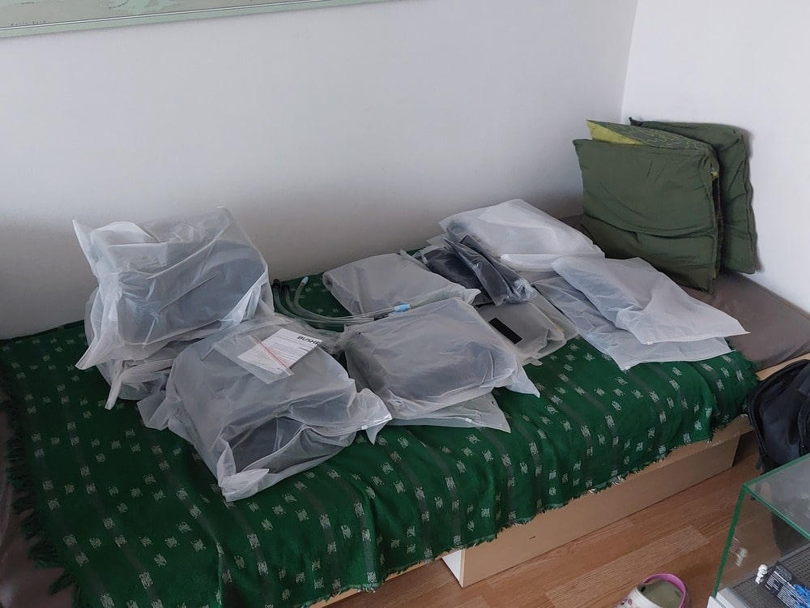
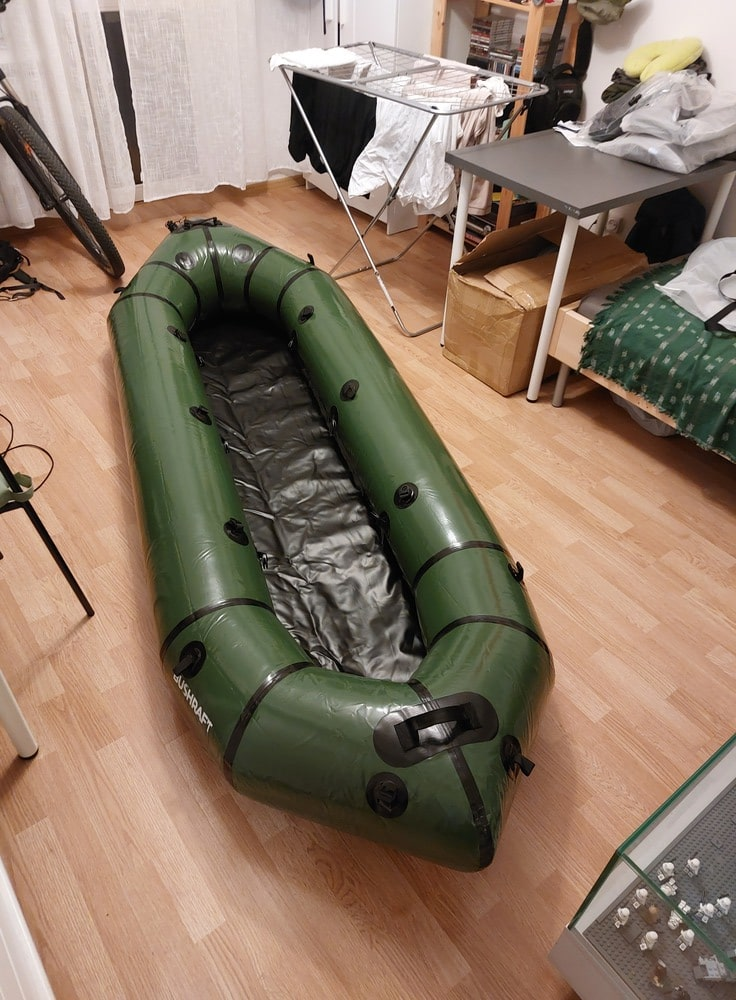
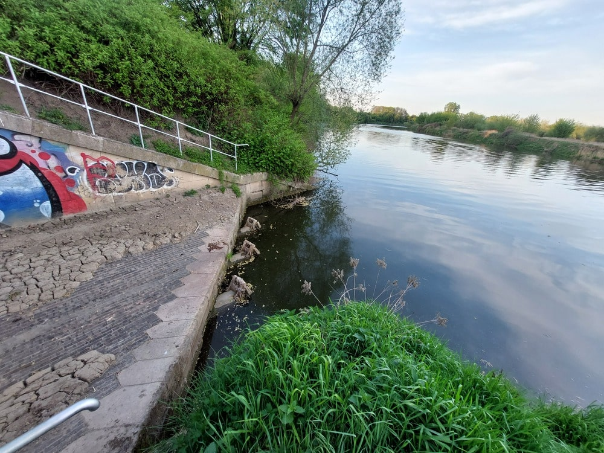
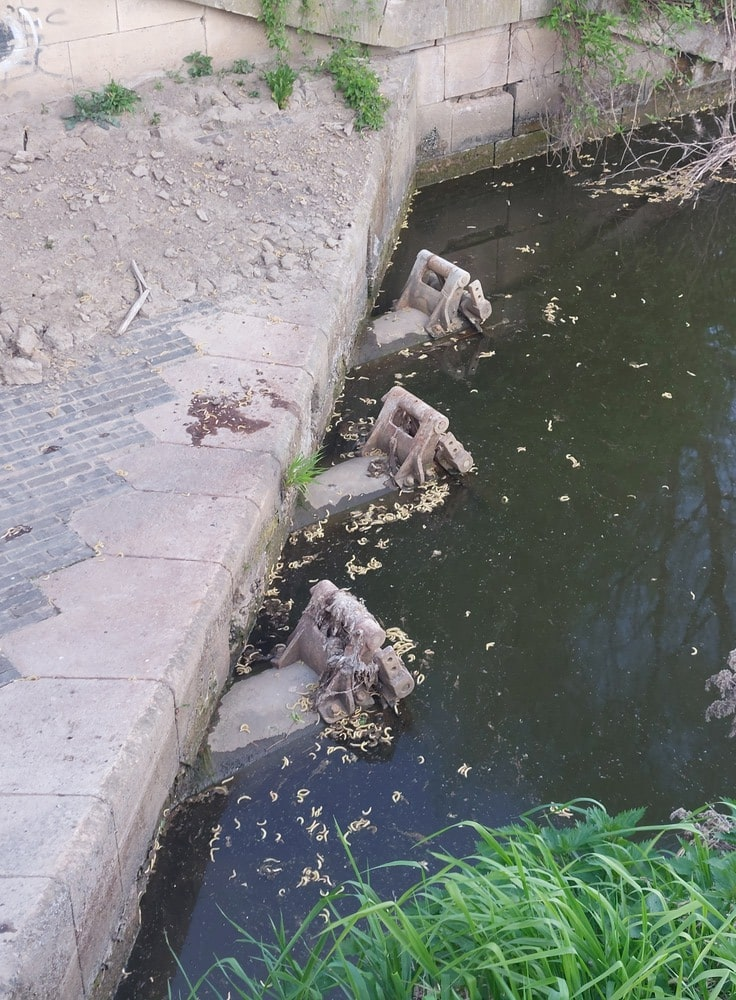
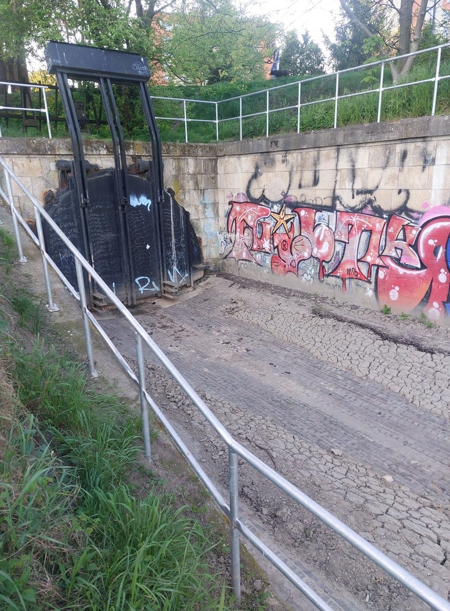
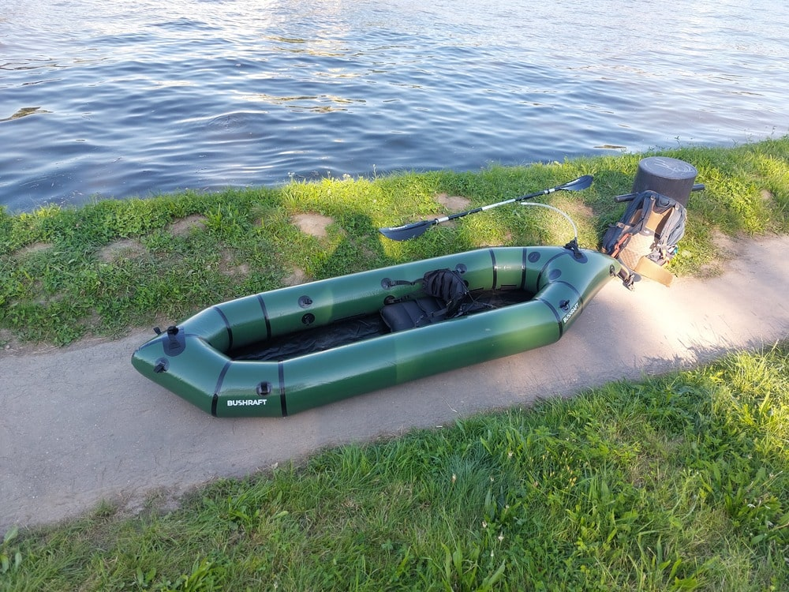
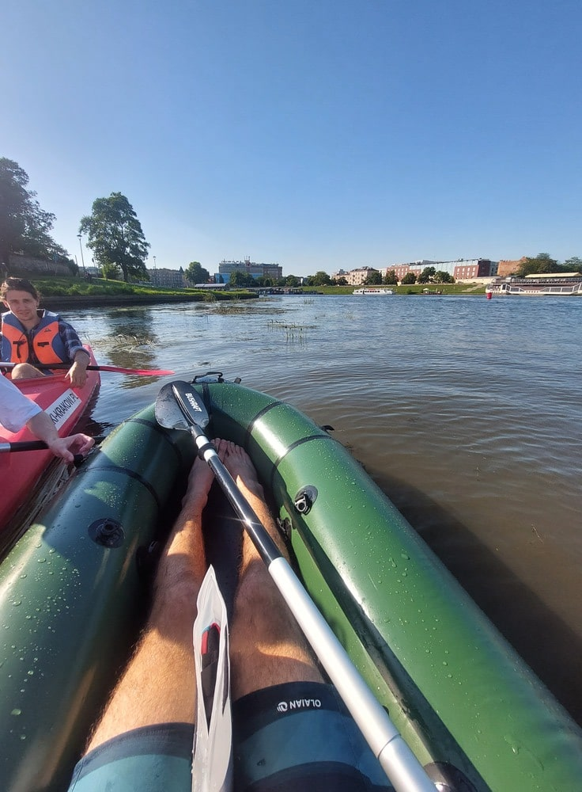
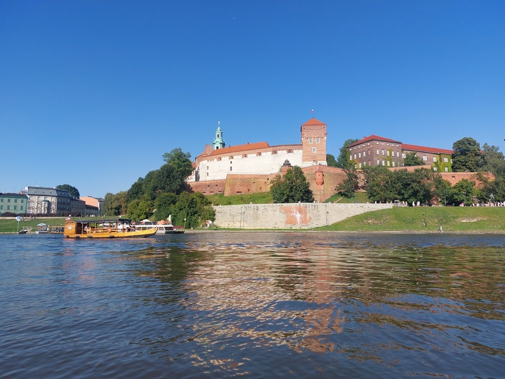
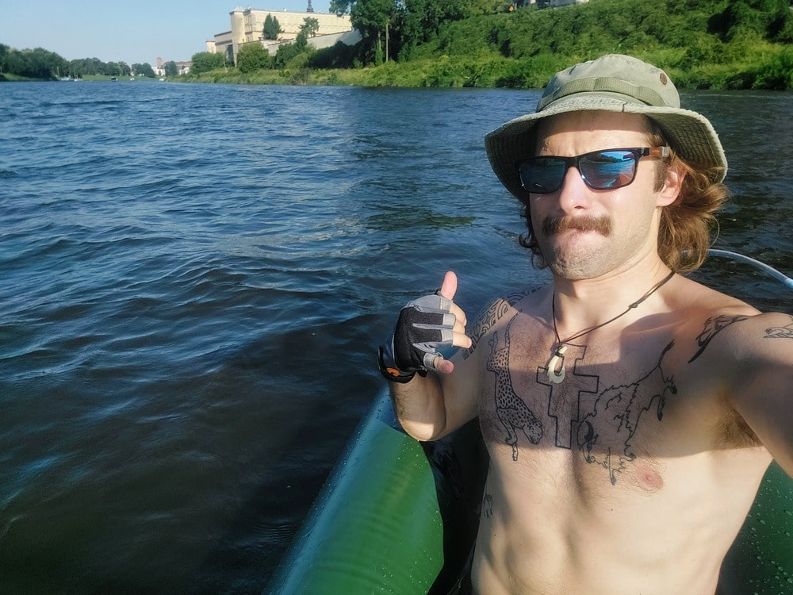
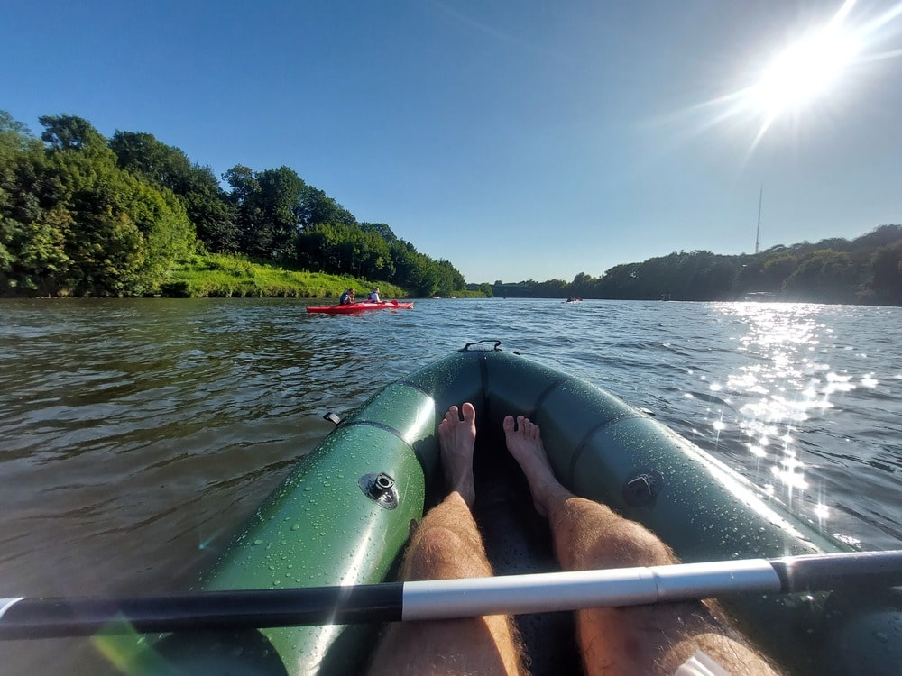

First packraft adventure
Since September is approaching, and with it quite a big adventure project, my friends Mateusz, Bartek, and I are planning to paddle down the Vistula River on packrafts, from Kraków all the way to the Baltic Sea, camping along the way on the many beaches and islands of this wonderful river. Time is running short, so I wanted to share with you what our plan and preparations look like and what gear we'll be taking with us. So, let's begin:
The Idea:
Where did the idea for such an initiative come from? My first ever serious adventure was a bike trip from Kraków to the sea in 2021. It was a truly important and meaningful journey for me. I gained a lot of valuable experience on it and built up the courage to explore and conquer the world. Shortly after it ended, I jokingly said that next time we should do the same trip, but using a different means of transport, like a kayak. For three years it remained just a joke, until one day during a mountain trip it struck a chord with Mateusz and Staszek. They both agreed it was a great idea and worth doing. We agreed we would make it happen the following year. And that's what brought us here. Unfortunately, Staszek can't join us because of his Erasmus exchange, but instead, Bartek is coming along with us — also a strong teammate. It's funny to think that something which once was just a silly joke thrown into the air will, in 2 weeks, become reality.
Why Packraft?
In the original idea, the means of transport was supposed to be a kayak. I assumed that buying a used, old, plastic kayak wouldn't be expensive, but there were several problems we had to think through:
- What will we do with the kayaks once we reach our destination?
- Should we sell them in Gdańsk?
- Maybe somehow transport them back to Kraków?
- If we do transport them, where would we keep them?
- And what would we do with them afterwards?
While we were considering this, someone suggested the concept of a packraft. These are small inflatable rafts designed to be carried in a backpack during hikes, which makes them very lightweight and easy to use. After doing some research, we decided to go for it. Packrafts may be slower than kayaks and more prone to damage, but transporting them back to Kraków won't be an issue, and they will also be much more useful in the future. Since a packraft can easily fit into airplane luggage, owning one opens up a lot of travel opportunities that a kayak never could. Just imagine paddling down a wild river in the Yukon in Canada, or exploring the fjords in Norway, and so on. That's why we made this decision.
As for the specific model, we decided on packrafts from the Polish brand Bushraft. They're made by a private enthusiast of this type of travel, and his passion really shines through. We could see that he puts his whole heart into what he does, so we decided to trust him. We bought three packrafts — the Forest LOVE model — along with paddles and dry bags. These are two-person packrafts with an option to set them up for just one person, because we wanted a lot of comfort (after all, we'll be sitting in them for two weeks straight). On top of that, in the future they also give us the option to take one packraft for two people on a trip. With a load capacity of 300 kg, they also give us great flexibility when it comes to the gear we want to bring.
  Inflated packraft at home
The Plan:
We're planning to start the trip on the morning of August 31. Ideally, we'd like to launch somewhere near or under Wawel Castle because of the iconicity, but unfortunately, just past that part of the city there's the Dąbie dam, which would force us to get out of the water and carry our rafts. That's why we decided to enter the river after that dam. In early spring, I scouted possible spots where it would be easy to launch our packrafts. Since Kraków doesn't really have beaches along the Vistula, it wasn't an easy task. Eventually, I found an old flood-control outflow, where there's plenty of space, it's quiet, and there are pipes in the water that you can stand on to easily get into the raft. That will be our starting point.
   Launch spot
From what we found online, the distance from the Dąbie dam to the Vistula's main estuary is about 860 km. We have roughly two weeks for it, due to work schedules. Research showed us it's doable, although not easy to complete in such a short time — so we'll have to paddle hard. Fortunately, at the gym I've added a few exercises that simulate the movements I'll be doing during the trip. As for accommodation, we're planning to wild camp. We're hoping for nice sandy beaches and islands along the lower course of the Vistula. We expect that in September it will already be fairly cold, considering how chilly the evenings already get in August. We're also preparing for the lack of electricity, since it's possible we won't have anywhere to charge our gear for the whole two weeks. Now, 2 weeks before the trip, we already have the packrafts at home. A week ago, we did a 2-hour test run and everything went smoothly. You could feel that it's slower than a kayak, but it wasn't too bad. Luckily, the river current will be on our side.
     During tests
Equipment:
Sleeping
- Light, summer sleeping bag
- Mattress
- Sleeping pad
- Tarp (+ hiking poles for ground setup)
- Hammock + mosquito net
- Bivvy
Rafting
- Packraft
- Paddle
- Dry bag
- Sealed barrel
- Backpack
- Ropes
- Gloves for paddling
- Camelbak
- Flag of Krakow
Clothes
- Thermoactive set and warm socks for sleeping
- Warm sweater
- Rain jacket
- Windbreaker
- Long zip-up pants
- Swimming shorts
- T-shirts
- Hat
- Buff
- Warm hat
- Warm socks
- Crocs (instead of shoes, because you can wear them with socks and it's not a problem if they get wet)
Camping
- Gasoline stove (probably two of them for faster cooking)
- Cooking set from Esbit (2 pots, 1 pan)
- Tinder
- Knife
- Cutlery
- Headlight
- Matches
- First aid kit
- Basic survival kit
- Head mosquito net
Electronics
- Drone
- Camera
- Action camera (2 of them, so I don't run off battery)
- Power bank
- Garmin inreach mini 2
- Walkie-talkies
- Solar panels?
Hygiene
- Towel
- SPF
- Mosquito repellent
- Toothbrush and toothpaste
- Soap
- Toilet paper
Stocks
- Fuel for stoves
- Freeze-dried food
- Some snacks
- Water
- Water purification tablets
- Beer
As the date of the trip draws closer, my excitement keeps growing. This will be my first journey of this kind, and I don't yet have much experience with such long expeditions (I've done a few one-day kayak trips, but never anything this long), but I hope it's going to be amazing. My imagination was really sparked by reading Maciek Tarasin's book “Stalowe anioły nad Yari”, which tells the story of his numerous expeditions down wild and undiscovered rivers around the world. One day, I dream of paddling a wild river somewhere in northern Canada or Alaska, just like he described in his book. I highly recommend it to all travelers. I hope this rather lengthy post will help anyone who ended up here looking for useful information for a similar type of trip, and that it will inspire those who haven't yet decided to set out on such an adventure. Keep your fingers crossed, and stay tuned for the video and trip reports.
Peace, Kuba